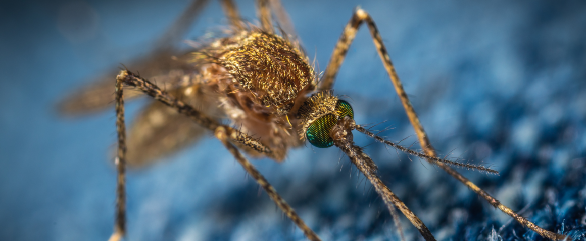

Welcome to my website and blog!
My name is Zhilei Zhao. I'm currently a graduate student in the
McBride Lab at
Princeton University.
I'm interested and trained in the fields of neurobiology and evolutionary biology.
My research focuses on the intersection of these two fields: neural circuits underlying animal behaviors and evolution of those circuits. For 5 years, I've been working with my amazing advisor
Prof. Carolyn (Lindy) McBride
on the evolution of olfactory circuits in the yellow fever mosquito Aedes aeygpti.
We want to find out why they became so attracted to human odor during evolution, which makes them devastatingly efficient for spreading diseases to humans.
You can find out more about my research on the
Research and Publication page,
and more about me through my CV.
I also do "research" on topics that I'm curious about, ranging from human evolution to
world histories, ancient Chinese philosophy... Some of which were summarized as 'mini-reviews'
in the Blog page, without any peer reviewing of course (or you could be my reviewer :')
